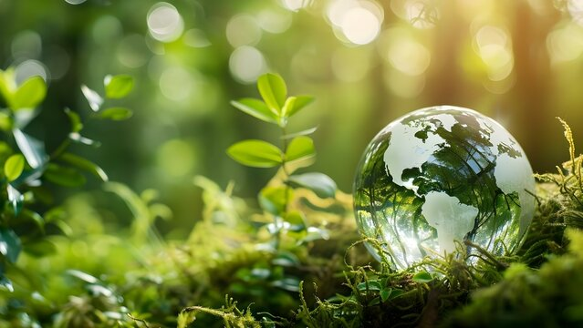
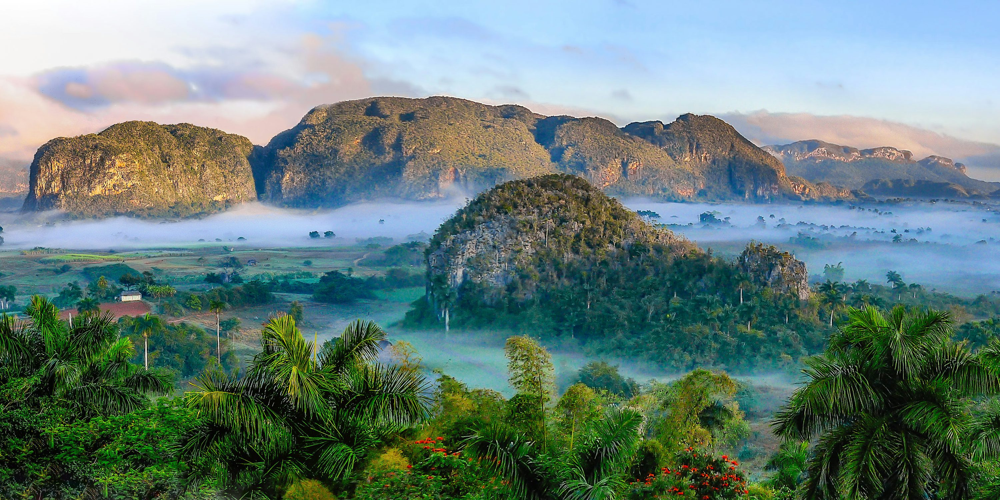

Natural resources are the valuable gifts of nature that support all forms of life on Earth and play a vital role in human development.
They are broadly divided into renewable resources, such as air, water, sunlight, forests, and wildlife, which can be replenished naturally, and non-renewable resources, such as coal, petroleum, natural gas, and minerals, which take millions of years to form and can be exhausted if overused.
These resources provide us with food to eat, water to drink, energy to run industries and transport, and raw materials for building and manufacturing. Without them, human survival and progress would not be possible.
However, due to population growth, industrialization, and careless exploitation, many natural resources are being depleted at an alarming rate, leading to issues like deforestation, loss of biodiversity, pollution, and global warming.
To secure a sustainable future, it is necessary to conserve natural resources through responsible usage, recycling, renewable energy adoption, and environmental protection efforts.
By balancing development with conservation, we can ensure that natural resources remain available for present and future generations.

